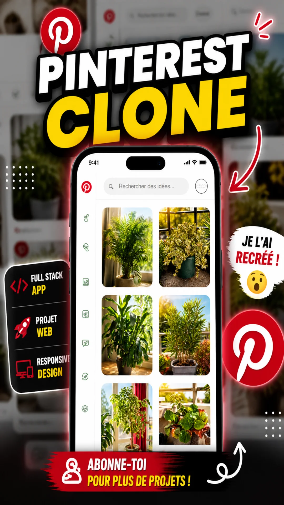

Recreer une page Web et Web Mobile inspirée de Pinterest avec HTML, CSS & JavaScript sur VSCode.

Recreer une page Web et Web Mobile inspirée de Pinterest avec HTML, CSS & JavaScript sur VSCode.

Photos prises par moi-même + icônes modifiées/créées pour respecter les droits d’auteur.

Objectif : progresser en front-end et UI/UX design.